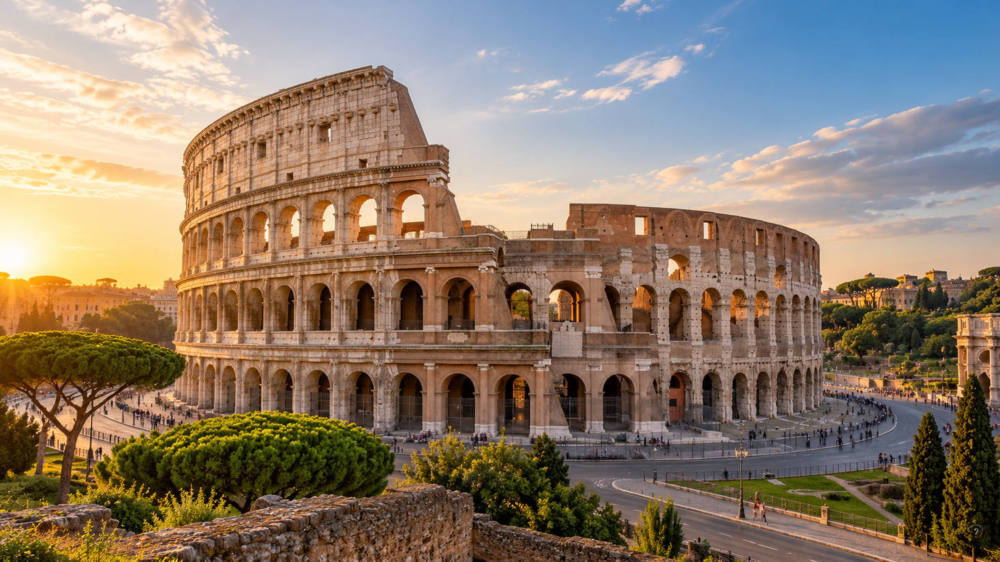
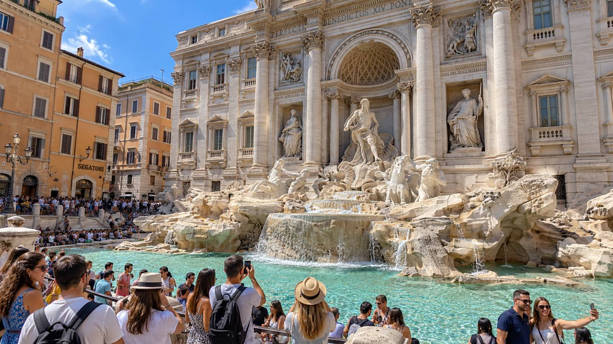
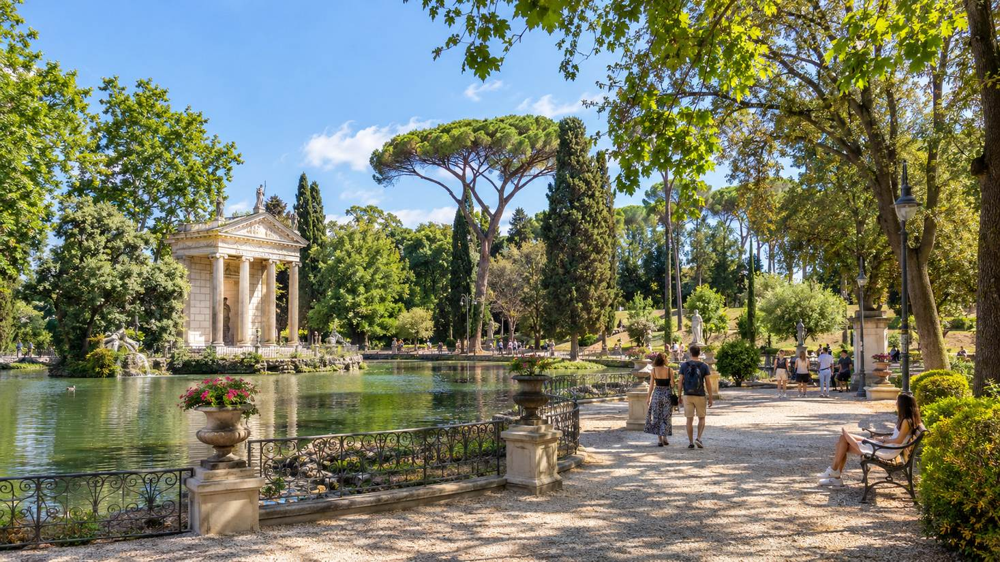

1. Coliseu

Inaugurado no ano 80 d.C., o Coliseu é um dos grandes símbolos de Roma. O anfiteatro recebia combates
de gladiadores e outros espetáculos públicos que reuniam milhares de espectadores. Hoje, seus arcos
e corredores revelam a dimensão e a engenharia da arquitetura romana.
Ideal para quem curte:
- História
- Arquitetura
- Fotografia
Saiba mais
2. Fontana di Trevi

A Fontana di Trevi é um dos cartões-postais mais famosos de Roma e impressiona pela riqueza de seus
detalhes barrocos. Concluída no século XVIII, a fonte combina esculturas monumentais, água cristalina
e uma atmosfera vibrante, sempre cercada por visitantes. É um lugar perfeito para admirar a arte da
cidade e viver um dos cenários mais icônicos da capital italiana.
Ideal para quem curte:
- Fotografia
- Arquitetura
- Romantismo
Saiba mais
3. Villa Borghese

A Villa Borghese é um dos parques mais agradáveis de Roma e oferece um lado mais tranquilo da cidade.
Seus jardins, lagos, esculturas e alamedas arborizadas criam o ambiente ideal para caminhar, descansar
e apreciar a paisagem. Além de ser um ótimo refúgio verde, a área também abriga espaços culturais e
belos pontos para contemplar a cidade.
Ideal para quem curte:
- Natureza
- Passeios ao ar livre
- Relaxamento
Saiba mais
Roma combina a grandiosidade de seus monumentos com experiências variadas ao longo do dia. Ao visitar
o Coliseu, a Fontana di Trevi e a Villa Borghese, você conhece diferentes facetas da Cidade Eterna:
sua herança histórica, sua beleza artística e seu lado mais leve e acolhedor.